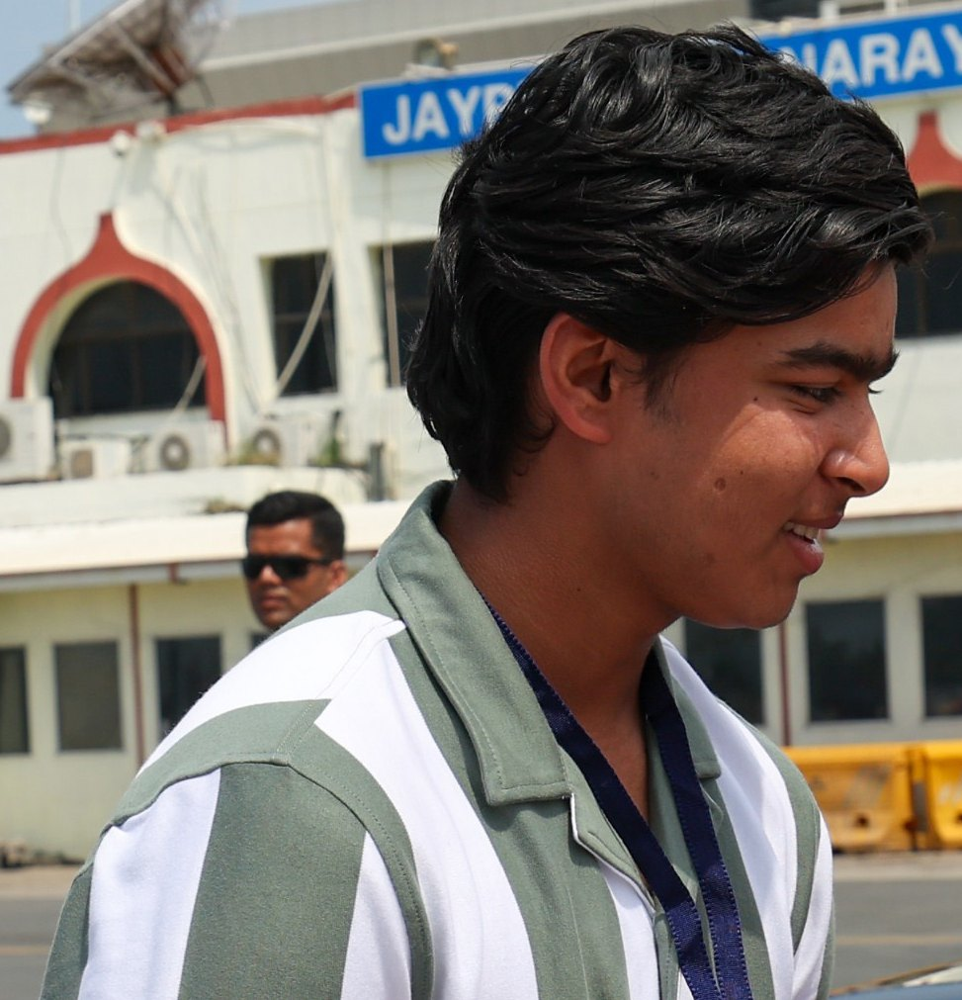

इसी हफ़्ते दुनिया की मशहूर पत्रिका TIME ने भारत के 100 उभरते चेहरों की अपनी पहली सूची, 'TIME100 Next India', जारी की। उसमें समस्तीपुर के ताजपुर का एक 15 साल का लड़का भी है: वैभव सूर्यवंशी। जिस उम्र में ज़्यादातर बच्चे दसवीं की तैयारी करते हैं, उस उम्र में वह भारत के लिए अंतरराष्ट्रीय क्रिकेट खेल चुका है, IPL में सबसे ज़्यादा रन बना चुका है, और इस महीने बिहार की सीनियर टीम का कप्तान भी बना।

वैभव का जन्म 27 मार्च 2011 को बिहार के समस्तीपुर ज़िले के ताजपुर में हुआ। वे बाएँ हाथ के आक्रामक सलामी बल्लेबाज़ हैं। साथी खिलाड़ी उन्हें प्यार से 'बॉस बेबी' कहते हैं। उनके आदर्श वेस्ट इंडीज़ के महान बल्लेबाज़ ब्रायन लारा हैं।
उनके पिता संजीव सूर्यवंशी ख़ुद क्रिकेटर बनना चाहते थे। वह सपना बेटे में पूरा होता दिखा, तो उन्होंने उसे पूरी ताक़त से आगे बढ़ाया। वैभव ने चार साल की उम्र में बल्ला थामा और पहली ट्रेनिंग पिता से ही मिली।
उत्तर बिहार के पाठकों के लिए एक ख़ास बात: अमर उजाला की एक रिपोर्ट के अनुसार, बचपन में एक रिश्तेदार के यहाँ रहते हुए वैभव ने लगभग डेढ़ साल मुज़फ़्फ़रपुर में, मुखर्जी सेमिनरी के पास की एक अकादमी में ट्रेनिंग ली। बाद में वे समस्तीपुर और फिर पटना में अभ्यास करने लगे। (उनकी शुरुआती ट्रेनिंग के बारे में अलग-अलग स्रोतों में अलग-अलग कोच और अकादमियों के नाम मिलते हैं।) उनके बचपन के कोच अतुल प्रियंकर के मुताबिक़ वे रोज़ छह-सात घंटे अभ्यास करते थे, और कहते थे: "मुझे सेंचुरी से कम पसंद नहीं।"
19 अप्रैल 2025 को, 14 साल 23 दिन की उम्र में, उन्होंने IPL में पहला मैच खेला और अपनी पहली ही गेंद पर छक्का जड़ा। नौ दिन बाद, 28 अप्रैल 2025 को गुजरात टाइटंस के ख़िलाफ़ उन्होंने सिर्फ़ 35 गेंदों में शतक ठोक दिया: किसी भारतीय का IPL में सबसे तेज़ शतक, और क्रिस गेल (30 गेंद) के बाद IPL इतिहास का दूसरा सबसे तेज़।
और फिर आया IPL 2026, जो पूरी तरह उनके नाम रहा:
फ़रवरी 2026 में अंडर-19 विश्व कप के फ़ाइनल में इंग्लैंड के ख़िलाफ़ वैभव ने 80 गेंदों में 175 रन बनाए और भारत चैंपियन बना। उन्हें 'प्लेयर ऑफ़ द टूर्नामेंट' चुना गया।
इससे पहले दिसंबर 2025 में विजय हज़ारे ट्रॉफ़ी में बिहार की ओर से अरुणाचल प्रदेश के ख़िलाफ़ उन्होंने 84 गेंदों में 190 रन बनाए थे, जिसमें 36 गेंदों का शतक भी था।
4 जुलाई 2026 को इंग्लैंड के ख़िलाफ़ T20 अंतरराष्ट्रीय मैच में, 15 साल 99 दिन की उम्र में, वैभव भारत के लिए खेलने वाले सबसे कम उम्र के पुरुष क्रिकेटर बने। इंग्लैंड में शुरुआत साधारण रही और एक मैच में उन्हें बाहर भी बैठना पड़ा। पर उन्होंने हार नहीं मानी: जुलाई में ही ज़िम्बाब्वे के ख़िलाफ़ 19 गेंदों में अर्धशतक बनाया, तीन मैचों में 151 रन किए और 'प्लेयर ऑफ़ द सीरीज़' बने। अक्टूबर में न्यूज़ीलैंड दौरे पर भी उन्होंने 19 गेंदों में 45 रन की तेज़ पारी खेली।
6 नवंबर को बिहार क्रिकेट संघ ने नियमित कप्तान सकीबुल गनी के चोटिल होने पर वैभव को सैयद मुश्ताक़ अली ट्रॉफ़ी के शुरुआती दो मैचों के लिए बिहार का कप्तान बनाया। 15 साल की उम्र में अपने से कहीं बड़े खिलाड़ियों की टीम सँभालना, बल्लेबाज़ी से भी बड़ी परीक्षा है।
और इसी हफ़्ते TIME की 'TIME100 Next India' सूची में उनका नाम आया, जहाँ वे हरमनप्रीत कौर के साथ सिर्फ़ दो क्रिकेटरों में से एक हैं। इससे पहले सितंबर में वे दुनिया भर की 'TIME100 Next 2026' सूची में अकेले भारतीय थे। दिसंबर 2025 में राष्ट्रपति ने उन्हें प्रधानमंत्री राष्ट्रीय बाल पुरस्कार से भी सम्मानित किया था।
इतनी कम उम्र में इतनी कामयाबी पर सवाल भी उठे। 2023 के एक पुराने इंटरव्यू के आधार पर कुछ लोगों ने उनकी उम्र पर शक जताया। उनके पिता का कहना है कि उनकी जन्मतिथि सही है और वैभव BCCI की उम्र-जाँच (हड्डी की जाँच समेत) पास कर चुके हैं। बड़ी चुनौती आगे है: शोहरत, पैसा और दबाव के बीच खेल पर ध्यान बनाए रखना।
ताजपुर के इस लाल को AnkurX की ओर से ढेरों शुभकामनाएँ: बल्ला यूँ ही बोलता रहे, और बिहार का नाम रोशन करता रहे।